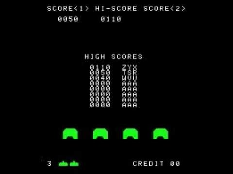
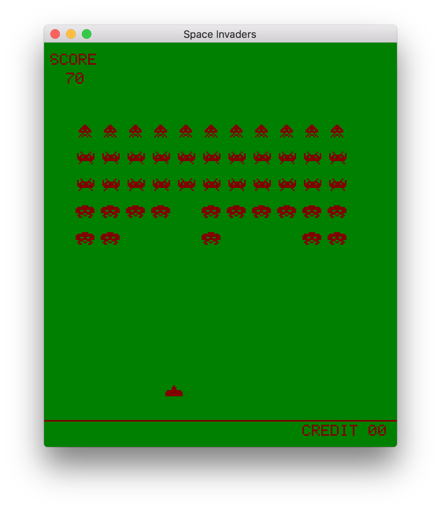

Space Invaders from Scratch - Part 5
In this series of posts, I am going to create a clone of the classic arcade game, space invaders, in C++ using only a few dependencies. In this last post of the series, I will handle scoring and add routines for drawing text and other UI elements.
The complete code of this post can be found here.
No High Score with no Score
 When video games were taking their brave first baby steps into this world, things were quite simple, they often did not have an end-goal, instead they used 'score' as means to quantify the success, or failure, of the player. Scoring also offered players a means to challenge each other in 'beating' their 'high score', and thus game makers could capitalize on players for a longer period, despite the limited amount of entertainment a game could offer, which, of course, was a direct consequence of the limitations of the hardware of the time.
Space invaders only has one stage. When you defeat all aliens, the stage restarts and aliens re-spawn. The only thing that was kept constant after a stage was cleared were the player lives and his score. So the first thing I'm going to do is declare a variable to keep track of the score,
size_t score = 0;
The score is increased by a certain amount when the player hits an alien, I choose to give between 10 and 40 points based on the alien type like so,
score += 10 * (4 - game.aliens[ai].type);
which is inserted in the main loop when we detect the bullet hitting the alien.
And with this little bit of code we can keep track of the player's score. Displaying it on the screen, though, is a bit more involved.
You can now create a text editor
We will handle drawing text and numbers like any other sprite in our game. For this reason, we define a new spritesheet containing 65 5x7 ASCII character sprites starting from 'space', which has the value of 32 in ASCII, up to character '`', which has ASCII value 96. Note that we only include uppercase letters and a few special characters. I am not going to include the whole spritesheet as it is too big, but you are free to have a look at this week's code.
To draw the text, we define a new function,
void buffer_draw_text( Buffer* buffer, const Sprite& text_spritesheet, const char* text, size_t x, size_t y, uint32_t color) { size_t xp = x; size_t stride = text_spritesheet.width * text_spritesheet.height; Sprite sprite = text_spritesheet; for(const char* charp = text; *charp != '\0'; ++charp) { char character = *charp - 32; if(character < 0 || character >= 65) continue; sprite.data = text_spritesheet.data + character * stride; buffer_draw_sprite(buffer, sprite, xp, y, color); xp += sprite.width + 1; } }
which takes a piece of text and draws it in the buffer at the specified coordinates and with the specified color, like we do with sprites. The function simply iterates through all of the characters in the text until the null character, i.e. the string termination character, is encountered, and draws each character using buffer_draw_sprite. The tricky part is getting the correct character from the spritesheet and correctly drawing characters, correctly spaced, from left to right. We achieve the first by indexing the character into the spritesheet by, (c - 32) * stride, where stride is the size of one character sprite, i.e. 7×5 = 35. The character drawing position, xp, is moved by the sprite width incremented by 1.
We define one last function for drawing numbers. The easiest here would be to use something like snprintf to convert a number, the score, to a string and then use buffer_draw_text to draw the number, but let's try to separate the number into digits ourselves,
void buffer_draw_number( Buffer* buffer, const Sprite& number_spritesheet, size_t number, size_t x, size_t y, uint32_t color) { uint8_t digits[64]; size_t num_digits = 0; size_t current_number = number; do { digits[num_digits++] = current_number % 10; current_number = current_number / 10; } while(current_number > 0); size_t xp = x; size_t stride = number_spritesheet.width * number_spritesheet.height; Sprite sprite = number_spritesheet; for(size_t i = 0; i < num_digits; ++i) { uint8_t digit = digits[num_digits - i - 1]; sprite.data = number_spritesheet.data + digit * stride; buffer_draw_sprite(buffer, sprite, xp, y, color); xp += sprite.width + 1; } }
Note that the number_spritesheet is just a reference into the text_spritesheet starting at sprite position 16. The second part of the function is very similar to that of buffer_draw_text. Getting the digits of the number is done inside the do-while loop. We basically find the last digit of the number by taking the remainder of the division by 10 (modulo operation), we then do an integer multiplication to basically shift the number to the right, and repeat until we have nothing left. Although we could have opted for the snprintf solution, it is good to know how some of these basic operations work.
In the main loop, after clearing the buffer, we draw the text 'SCORE',
buffer_draw_text( &buffer, text_spritesheet, "SCORE", 4, game.height - text_spritesheet.height - 7, rgb_to_uint32(128, 0, 0) );
and a little bit to the right, we draw the score,
buffer_draw_number( &buffer, number_spritesheet, score, 4 + 2 * number_spritesheet.width, game.height - 2 * number_spritesheet.height - 12, rgb_to_uint32(128, 0, 0) );
although we don't use credits in our Space Invaders game, just for the novelty, we also draw the text 'CREDIT 00' at the bottom of the buffer,
buffer_draw_text( &buffer, text_spritesheet, "CREDIT 00", 164, 7, rgb_to_uint32(128, 0, 0) );
As a finishing touch, we draw a horizontal line just above the credit text.
for(size_t i = 0; i < game.width; ++i) { buffer.data[game.width * 16 + i] = rgb_to_uint32(128, 0, 0); }
And here is the final result, 
Conclusion
As you might have realised, the game is not complete. What is still missing is the alien bullets and the alien bullet-player and bullet-bullet collision detection. Moreover, in the original game the aliens were obviously not stationary, but move from left to right and from right to left towards the player. Creating a blog post about adding all these features would not be instructive. We have implemented all the required tools needed, so you could finish implementing your own version of the game or you could even change the logic completely, you could perhaps combine Space Invaders with Breakout. I have implemented most of these features here, which you can use as a reference if you'd like.
In this last post of the series, we setup code for drawing text and numbers in our game. With all this code we have implemented, we can already create many different games, even a text adventure with your own custom font. That's the nice thing about programming, as you gain more experience, you develop a set of tools/pieces of reusable code which evolve along over time. This positive feedback loop allows you to create increasingly complex programs. Compared to a traditional game engine you have to put an increased initial effort to learn to program games from scratch, but the flexibility you get in return is worth sticking to it. Hopefully, this series has also convinced you that doing so can be fun!